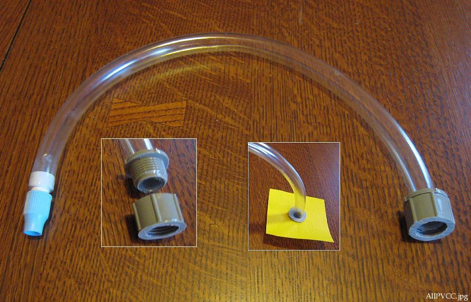

| PVC Sponsons ( page 4 of 5) | Menu Last Page Next Page |
|

The vinyl hose is glued with HH-66 vinyl cement to the twist valve and to the 1/2" male adapter. Apply the glue to the valve and adapter, and immediatly slide on the tube. No setup time is required before joining the parts. Allow the cement to cure for a few minutes.
|
|